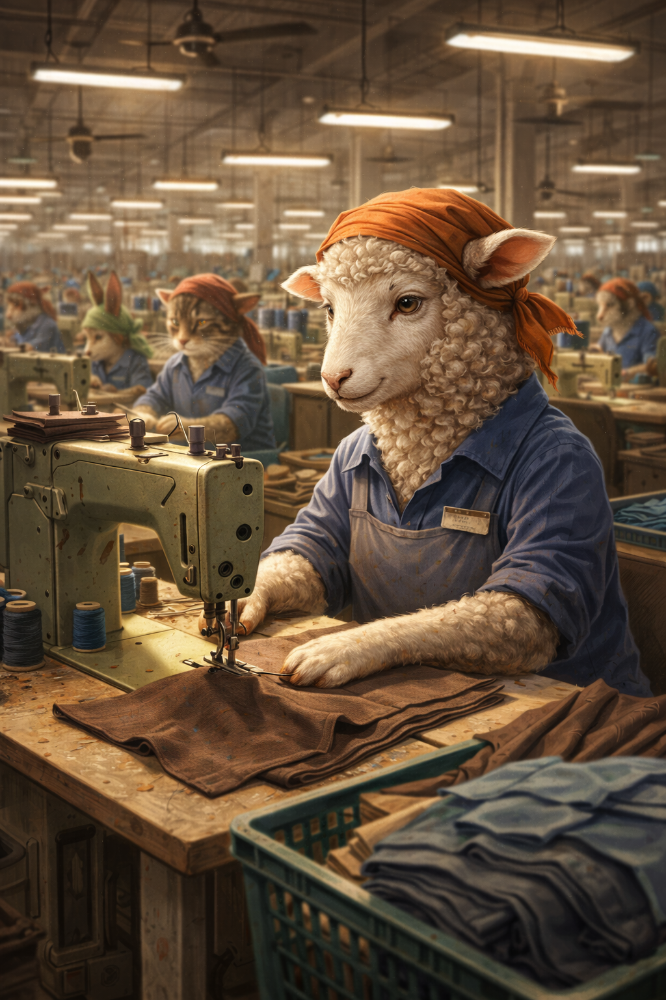

「働いたら自由がなくなる」。そう感じて一歩を踏み出せない人へ。恐れの正体と、自由を増やす視点、聖書の助言をまとめます。
「働いたら自由がなくなる」
そう感じて、一歩を踏み出せない人がいます。
能力がないわけではない。怠けているわけでもない。
それでも動けないのは、“自由を失うことへの恐れ”が強く心を縛っているからです。
この記事では、次の3つの観点から考えてみます。
働くということは、
という側面があります。
過去に、
があると、「働く＝再び縛られること」と無意識に結びついてしまうことがあります。
その結果、心がこう判断します。
「また自分を失うかもしれない」
「もうあんな思いはしたくない」
つまり働けないのは怠惰ではなく、自己防衛なのです。
ここで大切な視点があります。
確かに働くと時間は拘束されます。
でも同時に、次のような自由が増えていきます。

小さな成功や達成感の積み重ねは、
「自分は意外とやれる」
という感覚を育てます。
自信がある人は、新しいことに挑戦する自由を持ちます。
働く中で怖さを乗り越える経験をすると、
「怖いけれど、動ける」
という力が育ちます。
勇気は、人生の選択肢を広げる自由です。
働くことで、
が増えていきます。
できることが増えるほど、人は縛られにくくなります。
成長は、未来の自由を広げます。
収入は単なるお金ではなく、選択権です。
働くことは、実は「断る自由」を与えてくれます。
聖書は、働くことを単なる義務とは見ていません。
伝道の書 3:13 には、
人が労苦し、その良い結果を味わうのは神からの贈り物である
とあります。
働くことは罰ではなく、実りを味わう喜びなのです。
箴言 10:4 には、
勤勉な手は人を富ませる
とあります。
ここでいう「富」は、お金だけでなく、信頼・能力・経験も含まれます。
勤勉さは未来の自由を築きます。
コロサイ人への手紙 3:23 はこう勧めます。
何をするにも、心から行いなさい。
大きな仕事でなくても、神は姿勢を見ておられます。
この考えは、自信を失いやすい人を支えてくれます。
「怖くて動けない」とき、
フィリピ人への手紙 4:6,7 は、
思い煩いを神に打ち明けなさい
と勧めています。
不安がゼロになってから動くのではなく、
不安を抱えたまま神に頼って進めるのです。
自由とは、「何にも縛られないこと」ではありません。
本当の自由は、
選べること
です。
働くことは一時的に時間を差し出します。
しかしその代わりに、
という、より大きな自由を育てます。
もしあなたが「自由を失うのが怖い」と感じているなら、
それは弱さではありません。
自分を守ろうとする心の働きです。
でも、少し視点を変えてみてください。
働くことは、
あなたを縛るためではなく、
あなたを強くし、自由にするための道にもなり得ます。
大きな一歩でなくて構いません。
小さく、安全に、少しずつ。
神はあなたの努力を見ておられます。